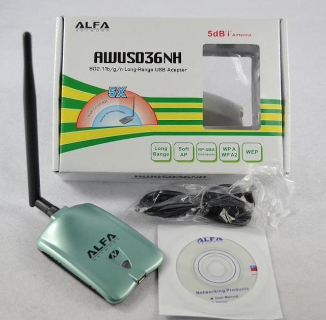
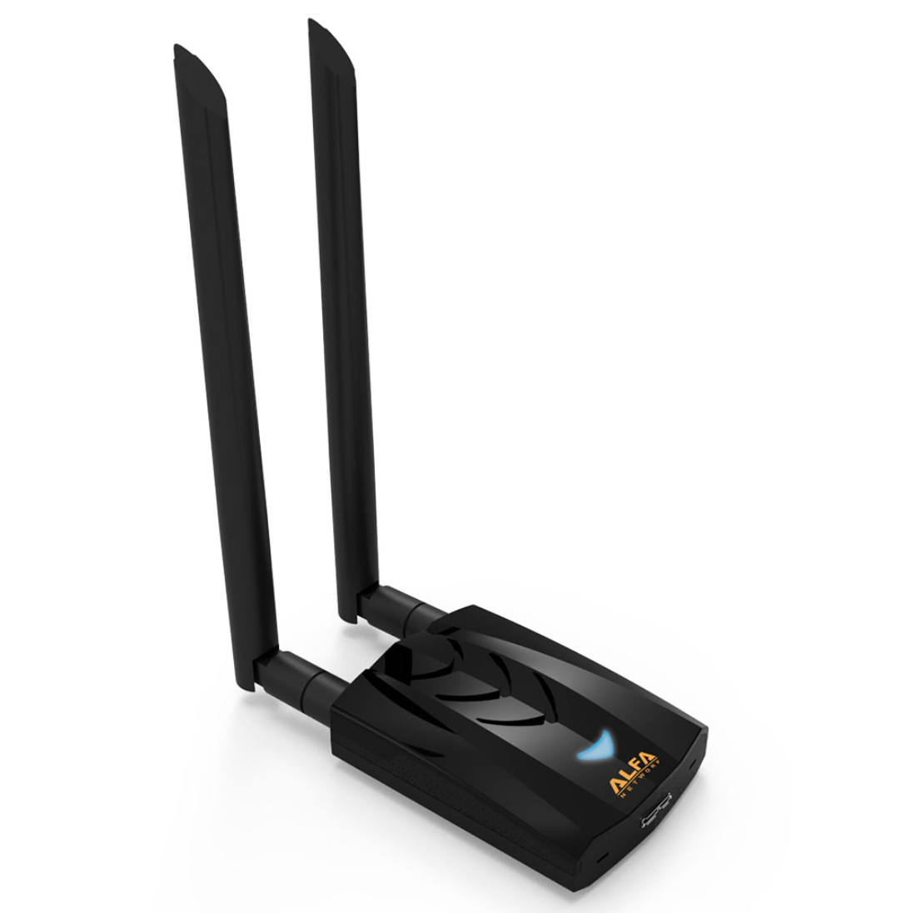
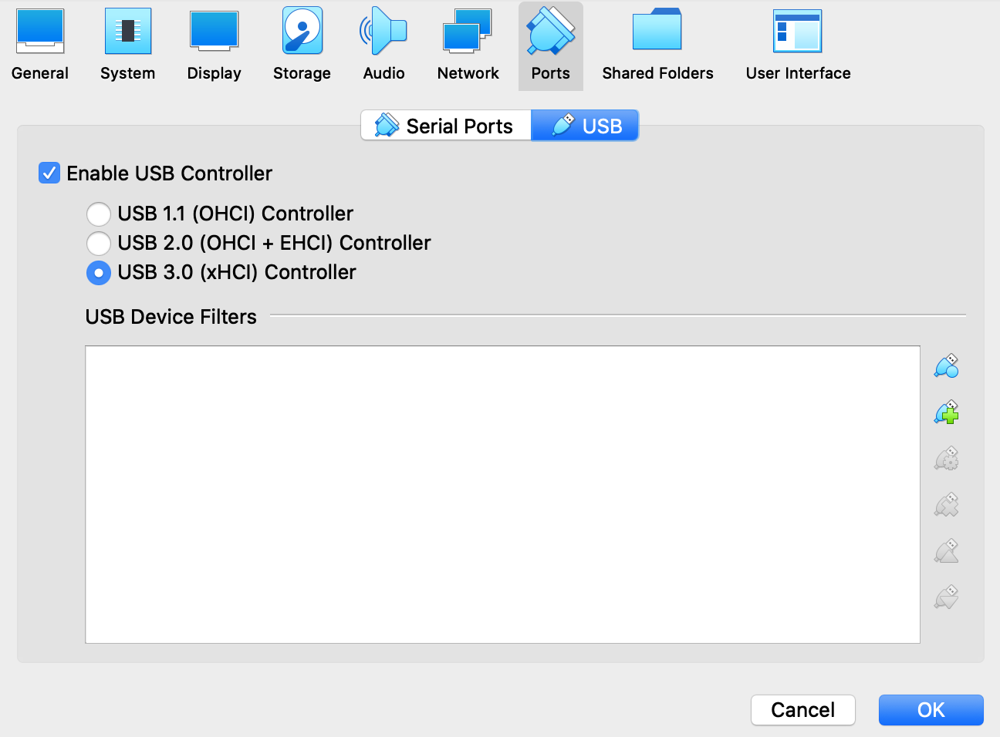
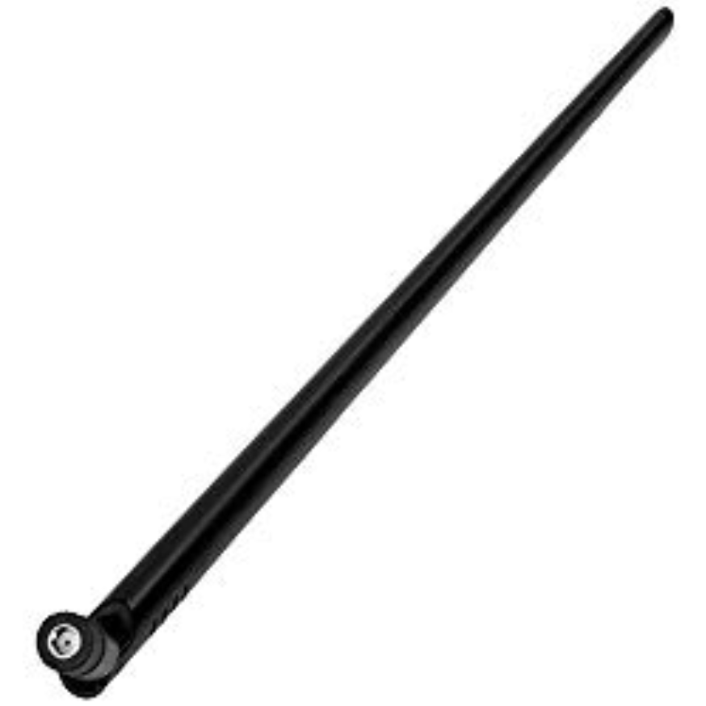
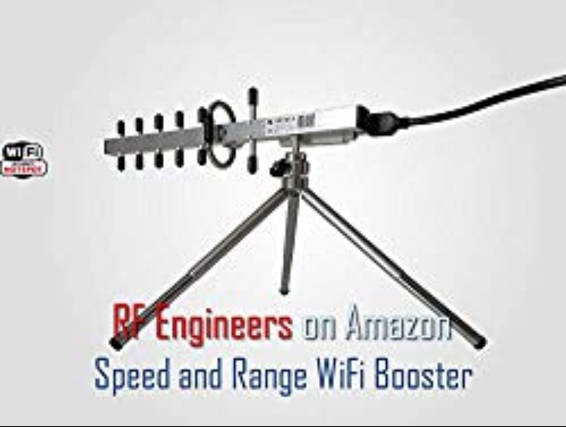
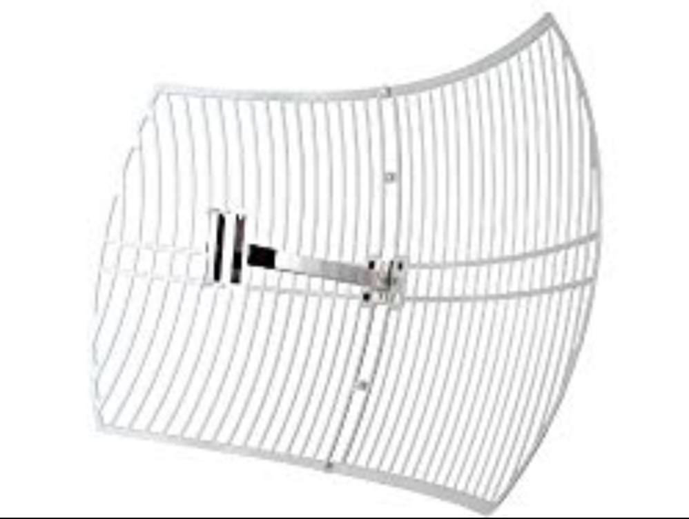

Required Wi-Fi hacking hardware
Everyone uses a variety of hardware to hack into Wi-Fi networks with slight variations from setup to setup. There's no "right" way to have your gear setup but I recommend getting a backpack that can house all your Wi-Fi hacking gear in one place and keep the antennas hidden. You want to blend in while you're sitting at the coffee shop.
What do you think of Russian hackers or the Federal Security Service (FSB) abilities? Russian, Iran, North Korea, and many others have agents around the world conducting cyber operations against whomever all the time. We all have our own way of doing things but learning from "professionals" is ideal.
Click to read and learn about the Russians Wi-Fi hacking busts
It's a good idea to keep in the know (FaceBook, Twitter, Instagram, etc.) of other nation state actors and what they're up to so you're able to replicate what other government level hackers are currently doing and copy their methods for your own needs.
Important to note the Wi-Fi cards recommended require your laptop/computer to have USB 2.0 and USB 3.0 capabilties. Check your laptop/computer specifications to ensure they meet these requirements. All modern day laptop/computers will have this. This is required!
When you get more experience hacking Wi-Fi networks you can invest some more money into a larger setup should you choose to go fucking crazy. But for now
you will need the following:
(2) wireless cards capable of injection.
Antennas (not needed right away but a must for the future)
Many people get confused about which network card they should purchase so I'll make some recommendations so you don't have to figure that shit out on your own.
Head over to https://www.alfa.com.tw/service_1/all/1.htm and purchase the Alfa "AWUS036NH" or "AWUS036ACH" network card(s). You can also purchase these cards from Amazon, Ebay, Alibaba, and any other major online retailor.
Below is the Alfa AWUS036NH network card. This network card is 2.4GHz single band.

Once you've purchased the AWUS036NH you need to make sure the drivers are installed in Kali to get it working.
To do this type the following into Kali in Terminal:
sudo apt-get update && sudo apt-get dist-upgrade -y
sudo apt-get install firmware-ralink -y
sudo shutdown -h now
The picture below is the Alfa AWUS036ACH network card. This network card is Dual Band 2.4GHz or 5GHz.

To do this type the following into Kali in Terminal:
sudo apt-get update && sudo apt-get dist-upgrade -y
sudo apt-get install realtek-rtl88xxau-dkms -y
sudo shutdown -h now
Also, it's important to note that you will need to install the Virtualbox Extension Pack and then shut down your Kali machine so you're able to change the USB ports in Virtualbox to 3.0. You can do this in VirtualBox under Settings - Ports - USB - USB 3.0 for the network cards to function properly once the Extension Pack is installed. This is important.

Later on in your "career" it's recommended to pick up a wide variety of antennas. Depending on what your goals are you might want a magnitude of Wi-Fi networks to be able to connect to. Antennas help you increase your range of connectivity allowing you to connect to a Wi-Fi network a block away, the next apartment, or in some cases up to a 1/4 mile away. When you're looking at purchasing different antennas there are a few things you need to know.
A bigger antenna like a 15dBi or 20dBi doesn't necessarily mean it's better than a 2dBi per se. A 2dBi antenna is very effective at a short range whereas a 9dBi antenna is not effective at short range but works well with picking up signals from a distance. Also, if there are walls or other barriers between you and the Wi-Fi network you're trying to access a larger antenna will not make the signal better.
Let's say you want to connect to your neighbors Wi-Fi network across the street from you then a 7dBi or 9dBi antenna would be much better in this situation. The 7dBi-9dBi antenna isn't that big and is easily concealable in a shoulder bag or backpack that gives good range. Eventually you'll be wanting other antennas to increase your Wi-Fi connection range such as outdoor antennas and parabolic antennas. The stock antenna that comes with the Alfa network card that you'll purchase for this guide will suffice. These antennas look like:

"Yagi" antennas are known for connecting to a Wi-Fi network from a distance and are widely used in the hacker community. These are best suited when targeting a Wi-Fi network from a great distance. They generally look like:

Parabolic antennas have great range but are very specific and can be annoying trying to figure out the best angle to get the best signal. Picture using these antennas as like using a laser pointer. The beam of light from a laser pointer is so small but extends for a long distance however, can be tricky when targeting a small area far away. My advice here is that hopefully you're in a densely populated urban area and live higher than most buildings around you. If possible aim it directly at a high story building (ideally through a window) that's fully populated so you can compromise Wi-Fi networks up to a mile away. If you purchase a directional antenna then you can use the same techniques a hacker used to attack the Wi-Fi network of a popular organization sitting in his car from the parking lot which you'll learn about in the next article below. Ideally you would have a directional/parabolic antenna mounted on your balcony or outside facing a densely populated building or towards a known free Wi-Fi network. A parabolic antenna looks like:

Open the link below and search for "war driving" on the page (CTRL+F) and read that paragraph. When you have finished the paragraph read the whole article from the beginning.
Click to Read - The Great CyberHeist
As you can see antennas can be used in a wide array of possibilities when it comes to hacking. This is why it's important to have your gear setup in a way that is portable, concealable, and will accomplish what you're trying to do. Are you aiming your antenna at a local restaurant in order to compromise their network and siphon POS credit cards from memory over their network? It's best to do this from a distance.
If you do purchase a better antenna try and conceal it as best you can because having antennas sticking out of every pocket you have while at a coffee shop isn't really "blending" in now is it?
Imagine someone thinking something was peculiar about their internet connection at a public Wi-Fi and seeing someone with strange antennas, stickers on their laptop, wearing a top hat, and looking up to no good sitting there. It's just not good. Blend in. Keep your laptop clean looking, keep professional, and appear to be a normal plain user sitting in a coffee shop not up to anything. No need for "I love H4X0R5" stickers on your laptop. Keep average looking and don't talk to anyone about your activities. A wolf in sheep's clothing. Have the cables running right into your backpack/bag close to your computer if you have USB cables. Remember the fucking Russians had their whole car as a setup! Be creative and stay concealed.
Now that you're educated on the gear you need and have ordered the Alfa Wi-Fi network cards we can now start hacking Wi-Fi networks. When you have the right gear you can continue onto the next chapter.
Click to continue to Chapter 3